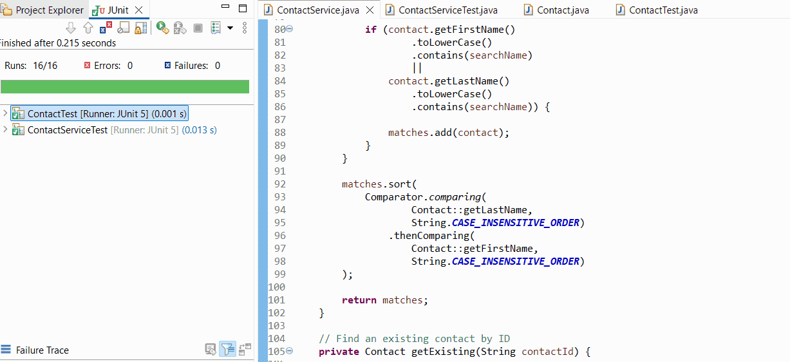

Original and Enhanced Artifacts
This Java Contact Service enhancement adds case-insensitive partial name searching, collects matches in an ArrayList, and sorts results by last name and then first name. It retains the HashMap for ID-based contact management and strengthens validation of blank input.
Enhancement Narrative
Artifact Description
The artifact I selected for the algorithms and data structures enhancement is the Contact Service project that I originally created in CS 320: Software Testing, Automation, and Quality Assurance. The project is a Java application that stores and manages contact information. Each contact has a unique contact ID, first name, last name, phone number, and address. The original project included functions for adding, deleting, and updating contacts, along with JUnit tests that verified the requirements and validation rules. I selected this project because it gave me a working program that I could improve without changing the main purpose of the original artifact.
Justification and Enhancement
I included this artifact in my ePortfolio because the enhancement gave me a clear way to demonstrate my understanding of algorithms and data structures. The ContactService class uses a HashMap to store contacts by their unique IDs. This data structure is useful because the contact ID acts as the key, which allows the program to locate a specific contact without having to manually search through every contact when performing the existing update and delete operations.
For the enhancement, I added a searchByName method that searches the stored contacts by either first name or last name. The search is case-insensitive and can find partial name matches. The method goes through the contacts stored in the HashMap and places matching Contact objects into an ArrayList. The results are then sorted alphabetically by last name and then by first name when contacts have the same last name. This improvement demonstrates the use of multiple data structures as well as searching and sorting logic. It also adds value to the original project because a user can now search a collection of contacts and receive the results in an organized order instead of only working with a known contact ID.
I also strengthened the input validation in the Contact class. In addition to the original length, null, and phone-number requirements, the enhanced version rejects blank or whitespace-only values where appropriate. I expanded the JUnit tests to verify the new validation and search behavior. The completed enhanced project passed all 16 JUnit tests with zero errors and zero failures. The tests verify the original add, update, and delete functions as well as the new name search, case-insensitive matching, no-match behavior, alphabetical sorting, duplicate-last-name sorting, and invalid search input.
Course Outcomes
The enhancement met the main course outcome I planned to address for algorithms and data structures. The strongest connection is the outcome requiring me to design and evaluate computing solutions using algorithmic principles and computer science practices while considering design choices. I had to decide how the existing HashMap would work with the new search feature, how matching contacts would be collected, and how the results should be sorted. Using an ArrayList for the matching results allowed the program to return an ordered collection without changing the HashMap that supports the existing contact service.
The enhancement also made progress toward the outcome involving well-founded techniques and tools because I used Java, Eclipse, JUnit 5, collections, validation, and automated testing to improve a working software artifact. It also connects to the security mindset outcome in a smaller way because stronger validation reduces the chance that invalid or unusable data will enter the program. I do not think this one artifact demonstrates every program outcome by itself, but it provides clear evidence of my progress with algorithms, data structures, software development practices, and testing.
Reflection
The enhancement process helped me understand that improving an existing program is different from simply adding more code. I first had to make sure the original Contact Service still worked and then add new functionality without breaking the existing requirements. One challenge was getting the original Java files into a new Eclipse project because the saved folder contained the source files but was not recognized as an Eclipse project. I created a new Java project, imported the files into the src folder, added JUnit 5, and verified that the original tests ran correctly before continuing with the enhancement.
Another challenge was making sure the new search feature demonstrated more than a simple lookup. Adding case-insensitive name searching and sorting the results made me think more carefully about how data moves through the program. The contacts remain stored in a HashMap, the search algorithm examines the stored values, matching contacts are placed into an ArrayList, and the list is sorted before it is returned. Writing tests for different search situations also helped me see why testing is important when changing existing code. By the end of the enhancement, all 16 tests passed with no errors or failures. This gave me confidence that the new functionality worked while the original requirements were still being met.
AI Use Acknowledgment
Generative AI was used to assist with organizing ideas, troubleshooting development steps, and revising the written explanation for this milestone. I reviewed the code, tested the enhanced artifact in Eclipse, and verified the final content and results before submission.
Test Results
The enhanced project was tested in Eclipse with JUnit 5. The recorded test run shows 16 of 16 tests completed with zero errors and zero failures.
